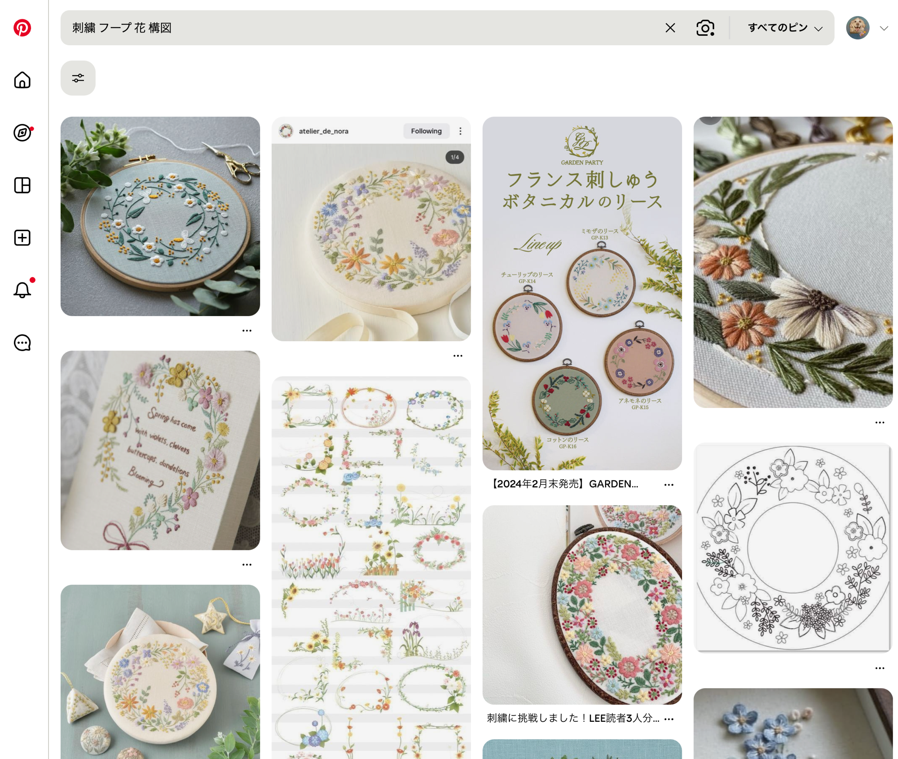

AI × 手刺繍クリエイターアカデミー
名前と背景の
刺繍アイデア
作品に名前を入れる方法と
背景のアイデア探しについて
1 / 13
デザイン決定の流れ
お客様へのヒアリング項目
お名前を入れますか？
ペットの名前・ひらがな・ローマ字など。フォントや並べ方の希望も確認する。
背景はどうしますか？
花・おもちゃ・その子らしいモチーフなど。「シンプルがいい」「お花を添えたい」など希望を聞く。
好きな花や色はありますか？
「青いお花で」「ラベンダーが好き」など具体的な要望を確認する。イメージ画像を送ってもらうのも◎。
その他のご要望
おもちゃ・リボン・好きなモチーフなど。「その子らしさ」を引き出すために自由に聞いてみる。
4 / 13
01
名前の刺繍アイデア
4 / 13
名前の刺繍アイデア
配置
まず額装後に見える範囲を確認する
額の内径を測ってから位置を決める。せっかく刺した名前が隠れてしまわないように最初に確認しておく。
ペットの構図の空いたところに名前や背景アイテムを入れる
顔や体と重ならない余白を活用する。ペットの向きや姿勢によって空きスペースが変わるので構図を見て柔軟に判断する。
Pinterestでレイアウトのアイデアを探す
「embroidery hoop floral layout」「刺繍 フープ 花 構図」などで検索すると右のような構図アイデアが見つかる。

タップで拡大
3 / 12
名前の刺繍アイデア
名前の並べ方
枠に沿わせてアーチ状に入れる
フープの丸みに合わせて文字を並べると、作品全体に統一感が出る。円形の構図に自然に馴染む。
直線で横に入れる
シンプルで読みやすい。どんな作品にも合わせやすく、迷ったらまずこちらを試してみるとよい。
5 / 13
名前の刺繍アイデア
フォントの種類
明朝体
もか Moca
細くて上品な印象。線の強弱があり、繊細な刺繍作品に馴染みやすい。
ゴシック体
もか Moca
モダンでシンプル。線が均一で視認性が高く、どんな作品にも合わせやすい。
筆記体（スクリプト体）
Moca
エレガントで個性的な印象。細いステッチとの相性が良く、贈り物にも向いている。
太さで印象が変わる
もか
もか
もか
細い → さりげなく控えめ。太い → 存在感があり記念品向き。同じフォントでも太さで雰囲気が変わる。
6 / 13
名前の刺繍アイデア
Canvaでデザインを確認する
フォントとレイアウトを事前に試せる
刺繍を始める前にCanvaでイメージを作っておくと迷いなく進められる。フォントの種類・サイズ・配置を視覚的に確認できる。
アーチ状のテキストも簡単に作れる
「テキストを湾曲」機能を使うと、フープに沿ったアーチ状の文字をかんたんに作れる。
実寸で印刷して転写テンプレートに使う
実際のサイズに合わせて印刷すれば、そのまま布への転写テンプレートとして活用できる。
📐 実寸印刷のやり方
①
カスタムサイズで作成
Canvaで新規作成時に
17cm × 17cm を指定
17cm × 17cm を指定
②
PDFでダウンロード
「ダウンロード」→
「PDF（印刷）」を選ぶ
「PDF（印刷）」を選ぶ
③
100%で印刷
印刷設定で「実際のサイズ」
または「100%」を選ぶ
または「100%」を選ぶ
7 / 13
名前の刺繍アイデア
ステッチの選択
筆記体・細いフォントに
バックステッチ：繊細な線になる定番
ホイップドバックステッチ：糸を絡めてロープ状に。存在感が出る
アウトラインステッチ：滑らかな曲線に向いている
ホイップドバックステッチ：糸を絡めてロープ状に。存在感が出る
アウトラインステッチ：滑らかな曲線に向いている
明朝体・ゴシック体に
サテンステッチ：面を埋めて存在感のある文字に
点（i・j など）に
フレンチノット：小さな点をきれいに表現できる
各ステッチの詳しい刺し方は別途動画を参照してください。
8 / 13
名前の刺繍アイデア
糸の色
背景に溶け込む色を選ぶ
背景と同系色の糸を使うと、名前が自然に馴染んで控えめで上品な印象になる。
ペットに使った色から選ぶ
毛並みや目の色と同じ糸を使うと、作品との統一感が出る。余り糸の活用にもなる。
その色の系統から選ぶ
全く同じ色でなくても、同系色であれば違和感なくまとまる。少しトーンを変えるとアクセントになる。
9 / 13
02
背景のアイデア探し
10 / 13
背景のアイデア探し
背景デザインと料金の考え方
花の種類
花びらが多いもの、細かいモチーフは時間がかかる。得意・不得意は人によって違うので、自分が刺しやすい花を基準にする。
色数
使う色が多いほど、グラデーションがあるほど工数が増える。シンプルな配色ほど仕上げやすい。
ボリューム感
一輪 → 数本 → リース（全体を囲む）の順で複雑さが増す。ボリュームが大きいほど作業時間も長くなる。
複雑なものほど料金が上がる
背景のデザインは料金設定に直結する。自分の作業量と得意・不得意をもとに価格を決めていく。
11 / 13
背景のアイデア探し
お客様の要望に合う花をPinterestで探す
花の名前＋「刺繍図案」で検索する
「ラベンダー 刺繍図案」「バラ イラスト」のように組み合わせると刺繍向きの参考画像が見つかりやすい。
色の指定がある場合は色名も入れる
「青い小花 刺繍」「blue forget-me-not embroidery」のように色名を加えると絞り込みやすい。英語でも試す。
構図の希望には「リース」「ボタニカル」で探す
花の種類より並べ方を探したいときは「floral wreath embroidery」「botanical embroidery hoop」などで検索する。
複数候補をお客様に送って確認する
「このイメージに近いですか？」とPinterestのURLや画像を共有して、デザイン方向をすり合わせる。
12 / 13
背景のアイデア探し
Pinterestの使い方のコツ
気に入ったピンから芋づる式に探す
1枚見つけたら「似たピンを見る」を使うと関連するアイデアが次々と見つかる。
ボードに保存しながら進める
「背景アイデア」などのボードを作って保存すると、後から比較・選択しやすい。
見つけた画像をそのままトレースするのはNG
他者の作品・写真には著作権がある。「色の組み合わせ」「ステッチの方向」「モチーフの配置」など、アイデアだけを参考にする。複数の画像の好きな部分を組み合わせて自分だけのデザインにしていく。
13 / 13
1 / 13